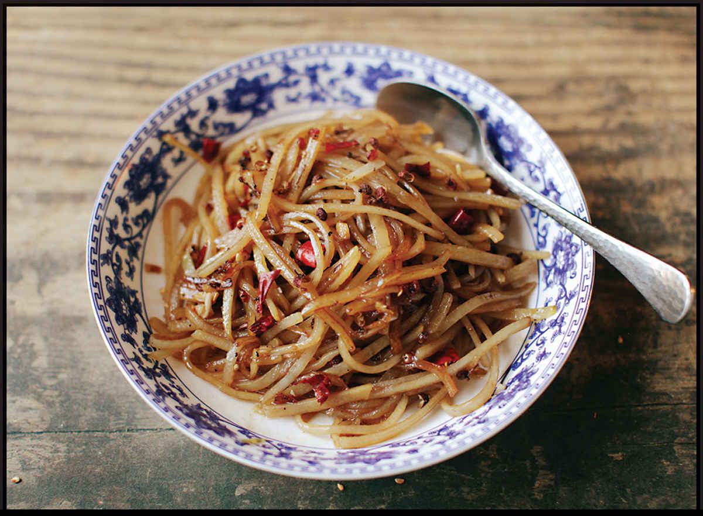

SICHUAN-STYLE HOT AND SOUR STIR-FRIED SHREDDED POTATOES
|
Yield Serves 4 as a small side dish |
Active Time 10 minutes Total Time 10 minutes |
You can easily scale this recipe up by 50 or 100 percent. Increase the cooking time after adding the potato by a minute or two to account for the increased volume. If your tap water is particularly soft (low mineral content), you might find that the potatoes soften or turn mushy during cooking. You can fix this issue by boiling your potatoes in acidic water. Add 2 tablespoons (30 ml) distilled white vinegar to 2 quarts (2 l) water and bring it to a boil in your wok. Add the shredded, rinsed potatoes and cook for 30 to 45 seconds (it’s OK if the water loses its boil during this process), drain, spread on a rimmed baking sheet to steam-dry, and proceed with the recipe as directed.
INGREDIENTS
1 large white or Yukon Gold potato (about 8 ounces/225 g)
2 tablespoons (30 ml) peanut, rice bran, or other neutral oil
2 teaspoons (4 g) red Sichuan peppercorns (red husks only, twigs and black seeds removed)
1 tablespoon (7.5 g) minced garlic (about 3 medium cloves)
1 small dried hot chile (such as árbol or Japones), stems removed, snipped into ½-inch pieces with kitchen shears (squeeze out and discard the seeds if you want it less spicy)
1 teaspoon (5 ml) light soy sauce or shoyu
2 teaspoons (10 ml) Chinkiang or balsamic vinegar
1 teaspoon (4 g) sugar
Kosher salt
DIRECTIONS
1Peel the potato and cut into fine matchsticks (see “How to Shred Potatoes for Stir-Fries,” here). Rinse in several changes of cold water until the water is completely clear. Spin the potatoes dry in a salad spinner or blot dry with a clean kitchen towel or paper towels.
2Heat a wok over high heat until lightly smoking. Add the oil and swirl to coat. Add the Sichuan peppercorns, garlic, and chiles and stir-fry until fragrant, about 10 seconds. Immediately add the potatoes and start stir-frying (do not let the garlic and chiles burn at the bottom of the wok). Stir-fry until the potatoes are translucent but still pale in color, 1½ to 2 minutes. Splash in the soy sauce and vinegar around the edge of the wok and toss to combine. Add the sugar and season with salt to taste. Transfer to a serving platter and serve.
